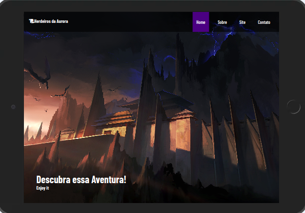
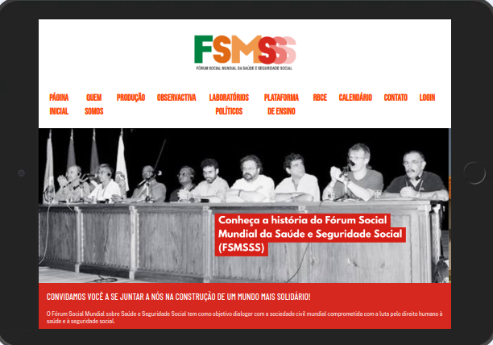
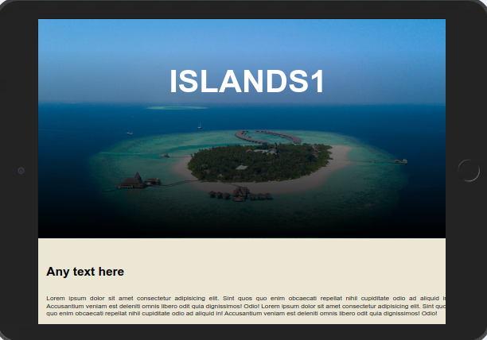

Projetos
Aqui estão alguns projetos nos quais estive envolvido
Projeto Cola Fotos

HTML5 CSS
Durante meus estudos e prática em desenvolvimento web, colaborei na criação de um projeto chamado "Cola Fotos", uma rede social focada em compartilhar momentos importantes da vida dos usuários. Este projeto foi uma excelente oportunidade para aplicar minhas habilidades técnicas, especialmente na criação de formulários interativos e seguros.
Projeto RPG Web

HTML5 CSS JavaScript
Fui responsável por criar um protótipo de site para um jogo de RPG, onde pude aplicar e aprimorar minhas habilidades em CSS e HTML. O objetivo do projeto era desenvolver uma plataforma online atraente e funcional que refletisse o universo do jogo e proporcionasse uma experiência imersiva para os usuários.
Projeto Migração site FSMSS

HTML5 CSS JavaScript React JS
O projeto teve como objetivo migrar o site do Fórum Social Mundial da Saúde e Seguridade Social, anteriormente hospedado na plataforma Wix, para uma estrutura mais moderna e flexível, utilizando tecnologias que proporcionassem maior robustez e responsividade. Essa iniciativa buscou melhorar a experiência do usuário, garantir um design responsivo para diversos dispositivos e oferecer maior controle sobre os dados do site.
Projeto Parallax

HTML5 CSS
Este projeto consiste em uma página web que utiliza o efeito parallax para criar uma experiência visual dinâmica e envolvente. O efeito parallax é aplicado a três seções de imagens de fundo, cada uma representando diferentes "ilhas". Entre essas seções, há blocos de conteúdo textual para complementar o design.